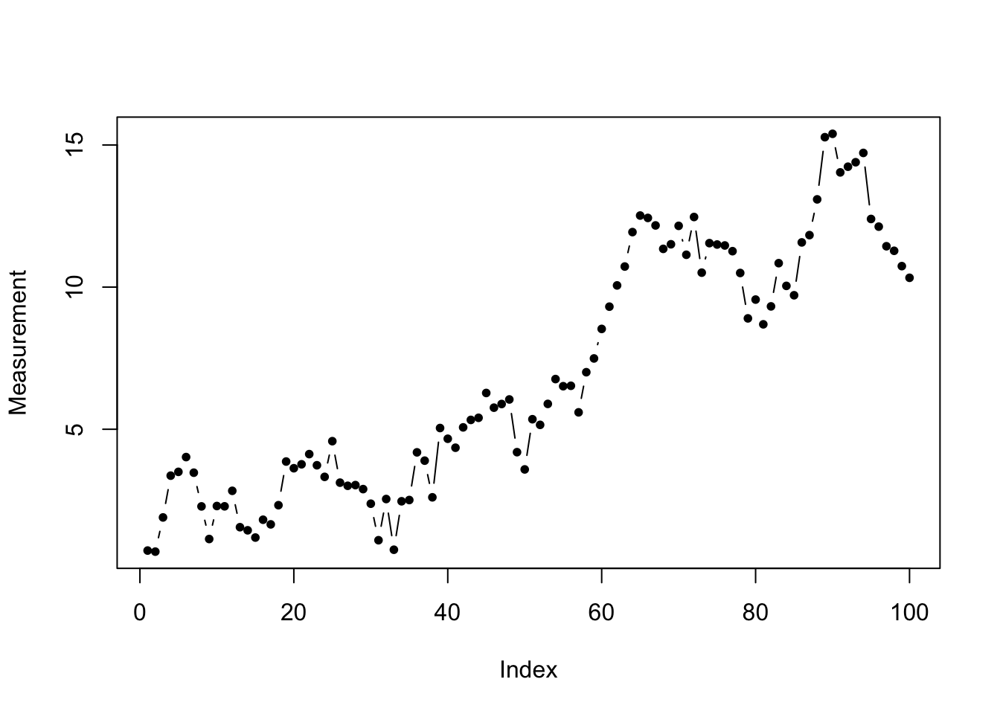
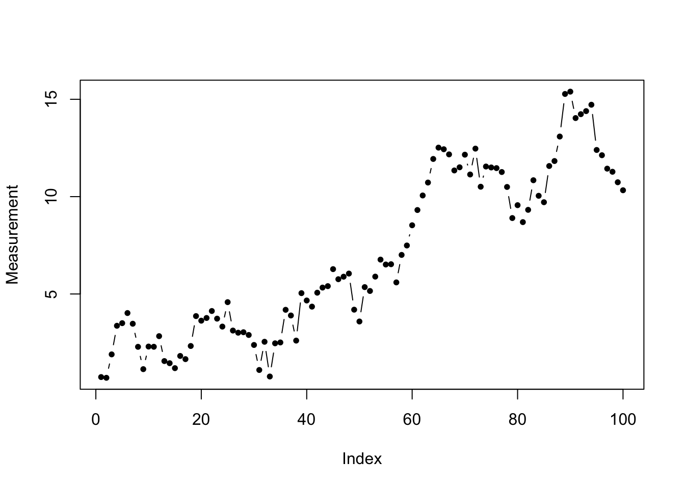
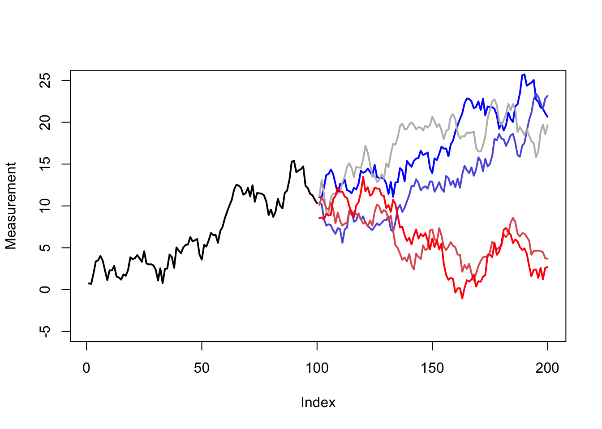
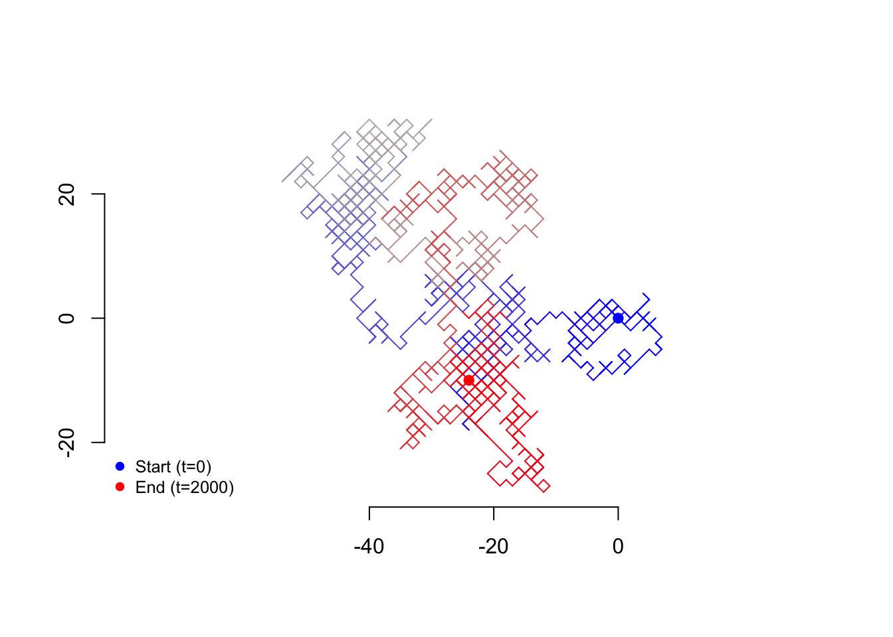

Code
set.seed(1999)
w <- rnorm(100)
rw <- cumsum(w)
plot(rw,type='b',pch=20,xlab='Index',ylab='Measurement')
Before learning about time series which we can usefully study or forecast, it might help to see an example of a times series we cannot usefully study or forecast: the random walk.
set.seed(1999)
w <- rnorm(100)
rw <- cumsum(w)
plot(rw,type='b',pch=20,xlab='Index',ylab='Measurement')
This times series seems to carry information. We see a positive trend. Perhaps we see some evidence of periodicity/seasonality. Sadly, we are mistaken: what we are looking at instead is a random walk.
Random walks refer to memoryless time series processes which “drift” randomly across 1, 2, or more dimensions. They may return to their starting value, but do not do so predictably. Let’s examine five possible futures that the random walk above might take — each of these are completely consistent evolutions of the series, each as likely as the other.
set.seed(1999)
w2 <- rbind(cbind(w,w,w,w,w),matrix(rnorm(500),ncol=5))
rw2 <- apply(w2,2,cumsum)
plot(rw,type='l',lwd=2,xlab='Index',xlim=c(1,200),ylab='Measurement',ylim=c(-5,25))
matplot(x=101:200,y=rw2[101:200,],type='l',lwd=2,pch=20,add=TRUE,lty=1,
col=colorRampPalette(c('#0000ff','#bbbbbb','#ff0000'))(5))
Random walks can be one-dimensional, like the example above, or multidimensional. The time between steps can be regular, irregular, or even continuous. The step sizes themselves can be equal, discrete, or continuous. (Random walks are, for example, closely tied to the idea of ‘Brownian motion’, which is the drift through space and time of tiny particles suspended in air or fluid, such as smoke, or dust in a sunbeam.)
Below is an example of a two-dimensional random walk where each step size is one unit.
nw <- 2000
rwcols <- colorRampPalette(c('#0000ff','#bbbbbb','#ff0000'))(nw)
set.seed(1235)
rwx <- cumsum(sample(c(-1,1),nw,TRUE))
rwy <- cumsum(sample(c(-1,1),nw,TRUE))
plot(rwx,rwy,type='n',asp=1,,axes=FALSE,xlab=NA,ylab=NA,main=NA,sub=NA)
axis(1,at=c(-40,-20,0)); axis(2,at=c(-20,0,20))
segments(x0=c(0,rwx[-nw]),x1=rwx,y0=c(0,rwy[-nw]),y1=rwy,col=rwcols)
points(c(0,rwx[nw]),c(0,rwy[nw]),col=rwcols[c(1,nw)],pch=19)
legend(x='bottomleft',legend=c('Start (t=0)','End (t=2000)'),
pch=19,col=rwcols[c(1,nw)],bty='n',cex=0.8) 
Although random walks appear in many forms, we will mostly concern ourselves in this course with a specific, one-dimensional walk observed in regular time intervals.
Let \(\boldsymbol{\omega}\) be a time series random variable observed at regular time periods \(T = \{1, 2, \ldots, n\}\), where the distribution of each random observation \(\omega_t\) is independently and identically distributed with mean 0 and finite variance \(\sigma^2\) for all \(t \in T\). Define a new time series random variable \(\boldsymbol{Y} = Y_1, Y_2, \ldots, Y_n\) as follows:
\[\begin{aligned} Y_1 &= \omega_1 \\ Y_t &= Y_{t-1} + \omega_t \quad \forall t>1\end{aligned}\]
Then \(\boldsymbol{Y}\) is a random walk, specifically a homogenous discrete-time random walk in one dimension. If \(\omega_t \stackrel{iid}{\sim} \textrm{Normal}(0,\sigma^2) \; \forall t \in T\), then we say that \(\boldsymbol{Y}\) is a Gaussian random walk.
Note that a Gaussian random walk is equivalent to the cumulative sum of a Gaussian white noise process, and that more generally any the cumulative sum of any IID white noise process is some type of random walk.
Consider the implications of these two calculations:
\[\mathbb{E}[Y_t] = \mathbb{E}[\sum_{i=1}^t \omega_i] = \sum_{i=1}^t \mathbb{E}[\omega_i] = \sum_{i=1}^t 0 = 0\]
\[\mathbb{V}[Y_t] = \mathbb{V}[\sum_{i=1}^t \omega_i] = \sum_{i=1}^t \mathbb{V}[\omega_i] = \sum_{i=1}^t \sigma^2 = t\sigma^2\]
Taken together, we see that while the expectation or the prediction for the future location of a random walk remains its starting place, the variance increases proportionally with the time period, meaning that the range of likely values grows wider and wider, and that the series becomes quite unlikely to be found at the starting point itself, even though this is technically the “average” outcome.
Note also that the expectation of a random walk given its past history has nothing to do with its starting point or how long it has run, but simply wherever it was last observed. Consider trying to forecast the value of a random walk at time \(t\) given a series of observations ending at time \(s \lt t\):
\[\begin{aligned} \mathbb{E}[Y_t|y_1,\ldots,y_s] &= \mathbb{E}[(Y_s + \sum_{i=s+1}^t \omega_i)|y_1,\ldots,y_s] \\ &= y_s + \mathbb{E}[\sum_{i=s+1}^t \omega_i] = y_s + \sum_{i=s+1}^t \mathbb{E}[\omega_i] \\ &= y_s + \sum_{i=s+1}^t 0 = y_s \end{aligned}\]